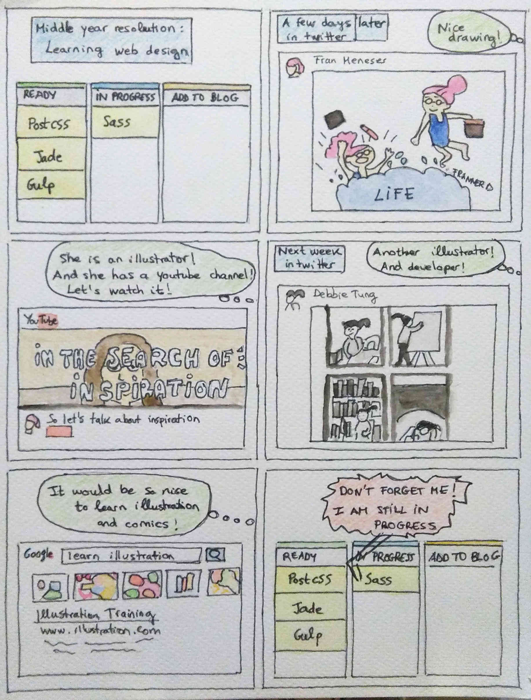

Challenges while learning
After learning the basics of responsive web design back in 2014, I did some web designs to practice what I learnt. I realized that I wanted to learn also graphic design to do my own designs from scratch, so I did some online courses:
-
Creative course
-
Graphic design basics
-
Learning GIMP & Inkscape
This year I discovered UX and I wanted to learn it too, but I decided that I should first improve in what I do for a living, that is, front-end development.
A couple of weeks ago I organized the learning project and last week I started my first course. But meanwhile I discovered another interest that I want to learn: illustration. In my imagination I put together all the future knowledge of web design, illustration, graphic design and UX, but I know that if you don’t start small and learn little by little, it is very difficult to learn something at the end.
Is my behaviour something related to multipotentialite? Do I want to learn very different things and I can’t focus in only one? Or is it maybe procrastination because I am afraid I won’t improve my skills after the learning project?
By the way, this is the first kind of “comic-illustration” to explain what had happened these two weeks. I have done a collage until I have more skills for this, but I think Illustrators don’t have to be afraid of a new rival ;) And don’t worry Sass, tomorrow we see each other again :)

Images from @taigaio, @frannerd, @WheresMyBubble, @YouTube and @Google.
Note: How I did it?
- Take a picture of each comic box
- GIMP: tools - Selection tools - Rectangular selection & Cut to the selection
- GIMP: Colors - Auto - Balance of whites
- Inkscape: New document with transparent background, create rectangle and duplicate and import comics and screenshots.